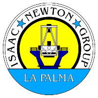

|
Ovidiu Vaduvescu and Richard Ashley are employees at the Isaac Newton Group (ING) of telescopes on La Palma and work at the William Herschel and the Isaac Newton telescopes regularly. Both are experienced, professional astronomers who share a love of the sky and are keen backyard astronomers too.
AstroFarm S.L. was created in 2020 as a business to bring astro-tourism to La Palma and offer observing and hosting for all people interested in looking at the stars, whether they are professionals, students or hobbyists. |
 Richard Ashley was introduced to Carl Sagan's COSMOS series when he was 9 years old, being given special permission to stay up late to watch it. This started his love for astronomy. He studied Physics and Astronomy at the University of Cape Town Richard Ashley was introduced to Carl Sagan's COSMOS series when he was 9 years old, being given special permission to stay up late to watch it. This started his love for astronomy. He studied Physics and Astronomy at the University of Cape Town in the 1990's and spent many nights observing at the South African Astronomical Observatory on the 20, 30 and 40" telescopes with photomultiplier photometry (rather than CCD). He was supervised by Don Kurtz, Darragh O'Donoghue and Brian Warner. in the 1990's and spent many nights observing at the South African Astronomical Observatory on the 20, 30 and 40" telescopes with photomultiplier photometry (rather than CCD). He was supervised by Don Kurtz, Darragh O'Donoghue and Brian Warner.
He converted to Electrical Engineering while still in Cape Town and then moved to London to work as a technical consultant in the .com world. He spent 15 years working at  and is still a part-time consultant there. and is still a part-time consultant there.
 Returning to astronomy in 2015, he undertook first a Masters and then a PhD in Astrophysics at the University of Warwick, supervised by Tom Marsh and Boris Gänsicke. His research is mainly focused on the evolution of compact binary stars with a particular interest in cataclysmic variables and polars. Returning to astronomy in 2015, he undertook first a Masters and then a PhD in Astrophysics at the University of Warwick, supervised by Tom Marsh and Boris Gänsicke. His research is mainly focused on the evolution of compact binary stars with a particular interest in cataclysmic variables and polars.
In 2015 he took a student internship at the ING and became a permanent member of staff in 2018. He is a Telescope Operator at the 4.2m William Herschel Telescope. |
|
Ovidiu Vaduvescu became mesmerized by astronomy thanks to the same COSMOS series of Carl Sagan, which magically could fit once a week during the only two hours per day schedule in the dark communism times of his native Romania, where he managed to build his own refractor using a glass eyepiece and a magnifier glued in a cartoon tube.
Since there was no astronomy department in Romania, he graduated in Mathematics at University of Craiova (UCV), before gaining his first job with the Astronomical Institute in Bucharest (AIRA), then completing his first PhD in Astronomy in Cluj-Napoca (UBB), Romania. Seeking a better life, in 1997 Ovidiu immigrated to Canada where he started as a computer programmer, but soon he returned to university for his second PhD in Astrophysics at York University (supervised by prof. Marshall McCall). Following his passion for stars, in 2006 he moved for his first postdoc in South Africa and then in 2007 to the second postdoc in Chile (ESO-Comite mixto). In 2009, he became staff astronomer of the ING in La Palma. Loving to share his dream career, during the years, Ovidiu has spread his knowledge about stars via public outreach and astronomy education, continuing as a member of amateur societies in Romania and Canada, giving lectures, organising star camps, the EuRo Eclipse 99  event (where he brought 170 foreign tourists to watch the 1999 total solar eclipse in Romania) and 16 expeditions and conferences in La Palma (via Astro Travels) event (where he brought 170 foreign tourists to watch the 1999 total solar eclipse in Romania) and 16 expeditions and conferences in La Palma (via Astro Travels)  which allowed to more than 500 astro-tourists to enjoy the starry nights of La Palma and other Canary islands! which allowed to more than 500 astro-tourists to enjoy the starry nights of La Palma and other Canary islands!
Ovidiu has two main science interests, namely dwarf galaxies and near Earth asteroids. He leads the EURONEAR project in which involves dozens of students and citizen scientists. During his career, he has visited and conducted astronomical observations on 30+ telescopes (mostly 1-8m class) located in famous astronomical observatories of Chile, Hawaii, Mexico, Canada, France, Spain (including La Palma and Tenerife) and his native Romania. Besides his scientific career which featured research affiliations with the IMCCE (Observatoire de Paris) and Instituto de Astrofisica de Canarias (IAC), Ovidiu taught part-time astronomy in five universities and schools of Romania, Canada and Chile, and since 2017 he has been supervising PhD students via UCV. |
Recent publications:
|